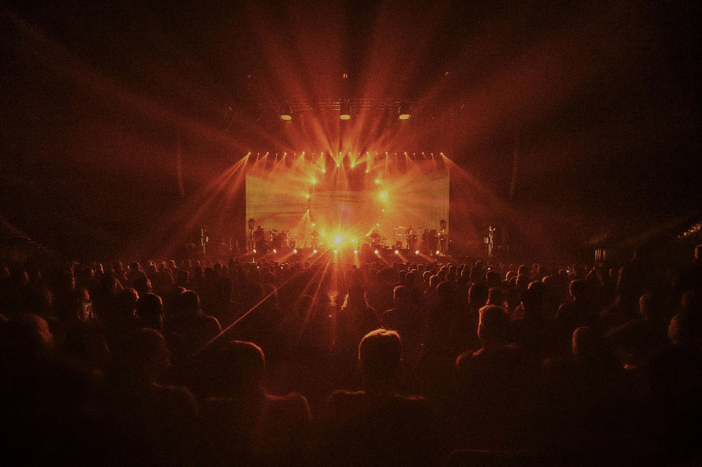

La plateforme pour réussir le BTS Son
Le cours E3 existe en prototype ; les autres épreuves sont en préparation.
En développementCultures et son · Paris
Apprendre le son, créer des projets ensemble, rejoindre un réseau d'artistes et de techniciens payés correctement.
Tekonest se construit pas à pas. Rien n'est encore en vente : ce site dit clairement ce qui existe et ce qui se prépare.
Chacune peut vivre seule. Ensemble, elles forment le réseau.
Réussir le BTS Son avec la plateforme Apprendre, et s'entraîner à câbler du vrai matériel sur TekPractice.
En développementPour les organisateurs, les lieux et les artistes : organiser, accompagner ou produire un projet avec une équipe créative et technique.
En projet, pas encore proposéPour les artistes, techniciennes et techniciens qui veulent des projets créatifs payés correctement.
Réseau en projet
Notre direction
Les musiques arabes, du Moyen-Orient au Maroc, les musiques afro et électroniques sur une même scène. Racontées par celles et ceux qui les font vivre, avec une équipe visible et payée.
Photo : Adobe Stock, retouchée pour Tekonest.
« La diversité crée de la richesse et de l'harmonie. »
La conviction à l'origine de Tekonest
Un nid tient ensemble des brins très différents. Le logo en a sept, tressés : sept fils, sept personnes du réseau. Ses motifs (cadres, médaillon, bandes incrustées) sont inspirés de la marqueterie de Damas, faite de bois et de nacre.
Une plateforme pour réussir le BTS Métiers de l'audiovisuel, option Son, et un simulateur pour câbler du vrai matériel. Chacun a aujourd'hui son propre visuel.
Le cours E3 existe en prototype ; les autres épreuves sont en préparation.
En développementQuatre niveaux construits ; version publique à venir.
En développementMis à jour le 22 octobre 2026.
| Branche | Pour qui | État | Prochaine étape proposée |
|---|---|---|---|
| Réseau | Artistes, techniciennes et techniciens | En projet | Écrire les principes de rémunération, puis une première liste. |
| Créer avec nous | Organisateurs et lieux | En projet, plus tard | Valider un modèle légal avec un juriste avant toute offre. |
| Apprendre | Étudiants en BTS Son | En développement | Vérifier le cours E3 et préparer les autres épreuves. |
| TekPractice | Étudiants en BTS Son | En développement | Remettre en ligne une version publique stable. |
Les inscriptions ne sont pas encore ouvertes. Vous pouvez déjà lire, comprendre et nous écrire.